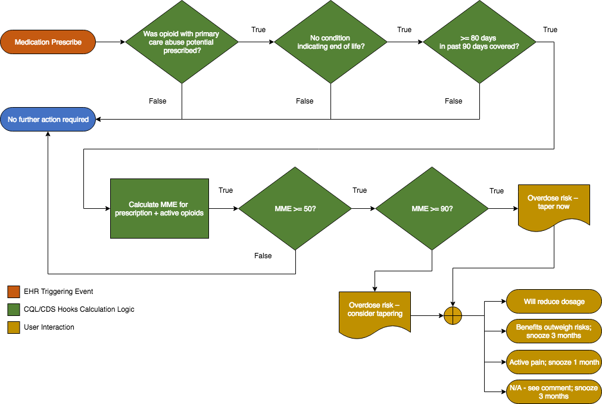

This section describes how recommendation #5 is implemented in terms of FHIR Clinical Reasoning Module resources and CQL libraries, as well as how those resources can be implemented within a FHIR server for integration with an EHR via CDS Hooks.
Once the flow has been established for a recommendation, it can be represented in Clinical Reasoning resources, typically using a PlanDefinition resource to build Event-Condition-Action rules.
The orange starting point for the flow indicates the point at which a clinician is prescribing a medication for a patient. The next steps in green involve determinations based on the input data, evaluating the criteria for whether or not the event meets the condition. If the condition is met, the yellow action steps are performed to created the guidance and return it to the EHR for presentation to the user, and, in this case, prompting a response from the clinician.
The structural information to represent the Event-Condition-Action rule is described in a PlanDefinition resource, while the logic components (the steps in green) are represented in a CQL library. These components are then used in an overall approach as depicted below:

Briefly, the EHR invokes the "medication-prescribe" hook at the appropriate point in the prescription workflow. The CDS Service is called via the CDS Hooks API and passed the medication being prescribed along with the patient information. The CDS Service then processes the appropriate PlanDefinition resource, evaluating the criteria and constructing a response as a CarePlan/RequestGroup if the criteria evaluate to true.
As described in the previous section, recommendation #5 is represented in Clnical Reasoning resources using a PlanDefinition and several Library resources:
The PlanDefinition is the starting point for the representation of the recommendation and defines the triggering event in the EHR, the condition that must evaluate to true for the guidance to be returned, as well as the actual guidance to be returned.
The event is represented using the triggerDefinition element of the PlanDefinition:
<triggerDefinition> <type value="named-event"/> <eventName value="medication-prescribe"/> </triggerDefinition>
The name "medication-prescribe" defines the "hook" to be used from the EHR.
The condition is specified with the condition element and identifies a named expression defined within the CQL library:
<condition> <kind value="applicability"/> <description value="Is total MME >= 50?"/> <language value="text/cql"/> <expression value="IsMME50OrMore"/> </condition>
The value of the expression element references an expression defined in the library for the PlanDefinition:
<library> <reference value="Library/opioidcds-stu3"/> </library>
The expression returns a true or false, indicating whether the condition is satisfied. If the condition is satisfied, the actions are defined as a group with a behavior of "exactly-one", indicating that the user is required to select one and only one of the options:
<selectionBehavior value="exactly-one"/> <action> <description value="Will reduce dosage"/> </action> <action> <description value="Risk of overdose carefully considered and outweighed by benefit; snooze 3 mo"/> </action> <action> <description value="Acute pain; snooze 1 mo"/> </action> <action> <description value="N/A - see comment (will be reviewed by medical director); snooze 3 mo"/> </action>
Note that the as of the time of this writing, the CDS Hooks specification does not support notifying the CDS Service of how the user responded, only that they responded. This issue is actively being addressed as part of the specification. In lieu of CDS Hooks support, the local EHR integration should provide this functionality.
The Opioid Management Guideline uses the GRADE approach to describing the quality of evidence and strength of the resulting recommendations. Within the Clinical Reasoning module, this information is represented using the cqif-qualityOfEvidence and cqif-strengthOfRecommendation extensions:
<extension url="http://hl7.org/fhir/StructureDefinition/cqif-strengthOfRecommendation"> <valueCodeableConcept> <coding> <system value="http://hl7.org/fhir/recommendation-strength"/> <code value="strong"/> <display value="Strong"/> </coding> </valueCodeableConcept> </extension> <extension url="http://hl7.org/fhir/StructureDefinition/cqif-qualityOfEvidence"> <valueCodeableConcept> <coding> <system value="http://hl7.org/fhir/evidence-quality"/> <code value="low"/> <display value="Low quality"/> </coding> </valueCodeableConcept> </extension>
The Clinical Reasoning module defines default terminologies for these, based on the GRADE scales, so these defaults are used. If more control over the exact text of the grading is needed, specific bindings could be defined and used instead with the same extensions.
This library contains the STU3 logic used by the PlanDefinition to establish the condition, as well as to dynamically construct the guidance so that it reflects the data for the current patient.
This library contains the Opioid Management Terminology Knowledge (OMTK) logic that performs the actual MME calculation. This logic is built in a separate library to enable to be reused from different contexts. In particular, the same OMTK library can be used with STU3 and DSTU2 versions of the Opioid CDS library if necessary.
The library requires the use of the OMTK solution component, a knowledge base derived from RxNorm and other standardized terminologies. Use of this component is described in more detail in the implementation documentation.
This library defines the structure of the OMTK solution component so that it can be used within CQL.
{% include container-end.html %} {% include footer.html %}